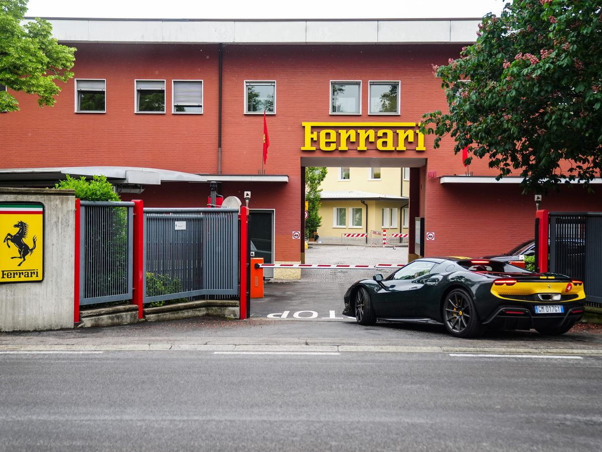

Fondée par Enzo Ferrari en 1947, l'usine de Maranello est devenue le symbole mondial de la performance automobile. C'est ici que bat le cœur de la Scuderia, l'équipe de course légendaire qui a fait trembler les circuits de Formule 1 du monde entier.
Surnommé "Il Commendatore", Enzo Ferrari avait une vision très claire : construire les meilleures voitures de sport au monde pour financer sa passion pour la course. Aujourd'hui encore, chaque voiture qui sort de ces portes rouges est assemblée avec la même exigence et la même passion qu'à l'époque.
